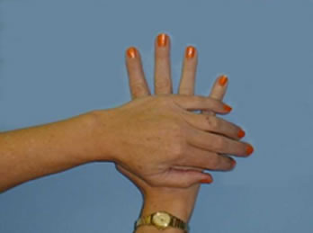

Module: Exercise
Jane Brandenstein, PT, and Janet Poole, PhD, OTR/L
Resources
Stretching Exercises for the Hand and Face
A short guide for hand and face stretches
Printout PDFRange-of-motion exercises: Hands
A quick guide to range-of-motion exercises for the hands.
Printout PDFExercise log
Use this printout to identify an activity, and track goals and frequencies.
Printout PDFParaffin wax treatment
This printout provides instructions for a paraffin wax treatment.
Printout PDFExercises for the hands
Do each exercise 3 to 5 times and hold for 3 to 5 seconds
Make a fist emphasizing flexion (bending) of the MCP joints. If necessary, the heel of one hand may have to press down on the dorsum (upper surface) of the proximal phalanges of the other hand.
To encourage PIP extension or straightening, you can use the heel of one hand to press the fingers of the other hand flat down against a table, or place the hands and fingers flat against each other in a “prayer“ position.

Another exercise for the PIP joint uses 3 points of pressure (see picture). The first point of pressure is the pad of the index finger on the palm side of the finger, just above the PIP joint. The second point of pressure is the pad of the third finger on the palm side of the contracted finger below the PIP joint. The third point of pressure is the thumb against the back of the contracted PIP joint. The thumb pushes against the joint while the index and middle fingers apply counter pressure to attempt to straighten the joint.
To maintain thumb motion, try to bend the thumb to touch the base of the little finger.
To stretch out the thumb away from the hand, place the pads of the thumb and index fingers of both hands together and push the thumbs away from the index fingers.